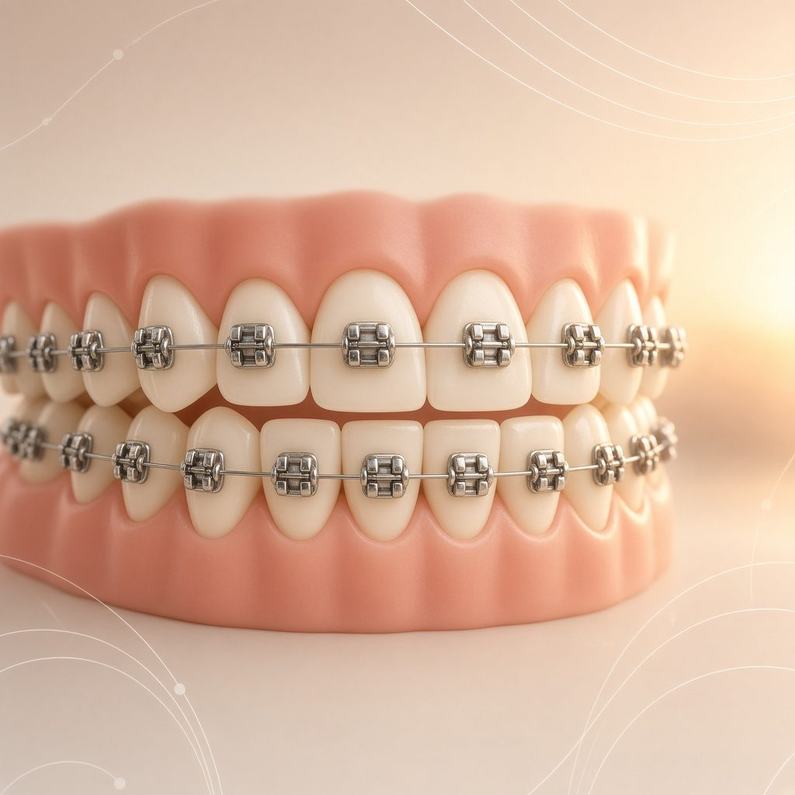
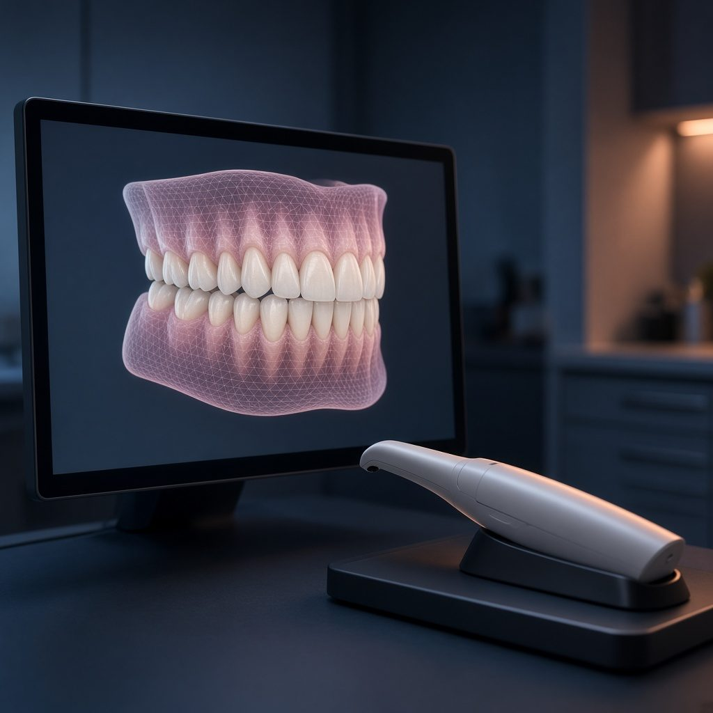

You have met Dr. Kang and talked about jaw surgery. Next comes braces, paperwork, and a hospital waitlist. This is the full overview of the path ahead.
The path at a glance
Keep going with orthodonticsPre-surgical braces or aligners are usually 6–18 months.
Readiness letter from your orthodontistSent about 6–7 months before braces are expected to come off. No letter means no next step.
OR Package → UBC Hospital waitlistYou fill it in; the clinic faxes it to the hospital. This is how you get on the waitlist.
Consent / surgery-planning appointmentBooked only after your orthodontist confirms you are ready. You sign final consent and share preferred months.
Wait for a surgery datePlan for at least about 6 months from waitlist to surgery. Dates come out 3–4 weeks before.
Surgery at UBC HospitalAbout 1.5–2 hours under general anaesthetic, usually one night in hospital.
Recovery and follow-ups in LangleyWeekly visits at first. Post-surgical orthodontics is usually another 3–6 months.
Orthodontics keeps going

Braces stay on through surgery
Jaw surgery works together with braces or aligners. Your teeth still need to move before and after the operation.
6–18
Months before surgery
3–6
Months after surgery
Your orthodontist sends a readiness letter about 6–7 months before braces are expected to come off. That letter tells our clinic you are getting close. If we do not have the letter, we cannot take the next step.
If you need teeth taken out
If extractions are part of your plan, allow 6–9 months of bone healing before surgery can go ahead.
The OR Package
We email you an OR Package. You complete it and send it back. Our clinic faxes it to UBC Hospital.
This first consent is paperwork only. It lets you go on the hospital waitlist. It is not a promise that you must have surgery.
Key point: Finishing the OR Package puts you on the UBC Hospital waitlist. The consent appointment does not put you on the waitlist.
Once you are on the waitlist
Book your Consent / surgery-planning appointment with Dr. Kang. We book it only after your orthodontist confirms you are ready.
Expect at least about 6 months from waitlist to surgery.
At the consent appointment
You will confirm the plan, talk about risks and recovery, and sign the final consent. You will also give your 1st and 2nd preferred surgery months.
Come ready with:
2–3 quiet months that could work for you
Childcare planned for about 8 weeks
Finances ready (full payment is due at the final prep visit)
Help at home for at least 2 weeks after surgery
Stage 02
Consent & Pre-op
You have signed consent and shared your preferred months. This stretch is mostly waiting. That is normal.
What happens now
You are already on the UBC Hospital waitlist from your completed OR Package.
Plan for at least about 6 months from waitlist to surgery.
Surgery dates are released about 3–4 weeks before the operation.
When a date is offered, reply as soon as you can: YES – [DATE] or NO.
If your preferred month changes, text or call the clinic right away. Do not wait. Life happens — school, work, childcare — and we would rather know early.
Keep all orthodontic visits. Your teeth still need to be ready.
Keep your childcare, time off, and help-at-home plans in mind.
Make sure we have the right phone number and home address for you.
You do not need to call to “check the list.” We will contact you when a date is available.
If you have not heard from us for a while, that usually means a date has not been released yet. Questions are still welcome — text or call during clinic hours.
Stage 03
Your Surgery Date
Dates come out about 3–4 weeks before surgery. When we offer you a date, reply as soon as you can: YES – [DATE] or NO.

Scans · at least 3 weeks beforeSurgery day · hospital admission
After you say yes, these are your jobs and deadlines.
Within 1 week
Return the Final Prep checklist
Send it back within 1 week of saying yes.
−21 days
Scans at the Langley clinic
Intraoral scans, X-rays / 3D CBCT. Wednesdays 8:30 AM–2:00 PM. Done at least 3 weeks before surgery.
After scans: no orthodontic changes — no new brackets, hooks, aligner changes, or wire adjustments.
−14 days
Choose a compounding pharmacy
You will need liquid medications. Chain pharmacies usually do not stock them. Send us the pharmacy’s name, phone, and fax by 2 weeks before surgery. See the pharmacy list.
Before
Confirm your home address
We need the right address on file. The team will also phone you shortly before surgery.
Final week
Final prep appointment (mandatory)
In Langley, no later than the Friday before surgery, usually 3:00 PM. Full payment is due then (Visa, Mastercard, cash, or debit).
−24 hours
Arrival time
We will give you your arrival time. Please do not call ahead to ask for it.
Day 0
UBC Hospital
Go to the main admissions desk and arrive on time. Surgery takes about 1.5–2 hours under general anaesthetic. You stay one night. Discharge is around 10–11 AM. You need an escort or a ride home. Bring ID, your health card, and your documents.
+7 days
Follow-ups in Langley
Weekly for the first 4 weeks. The first visit is 1 week after surgery. Follow-up continues to at least 8 weeks.
Count back from surgery day
Day −21Scans in Langley Wednesday, 8:30 AM–2:00 PM, at least 3 weeks before
Day −14Compounding pharmacy chosen Send us the name, phone, and fax
Final weekPrep appointment Mandatory, no later than Friday, usually 3:00 PM. Payment due.
Day 0Surgery at UBC Hospital Main admissions desk. One night in hospital.
Day +7First follow-up in Langley Then weekly for 4 weeks, continuing to at least 8 weeks
Want tick-boxes and dates on your phone? Use Your Jaw Surgery Checklist. It stays on this device only — nothing is sent to the clinic.
Stage 04
Recovery
Healing takes patience. Follow Dr. Kang’s instructions for you. The notes below are a general guide, not a replacement for your own plan.
Home recovery · ice, rest, liquids
The day before
Nothing to eat, and no alcohol, after midnight.
Clear fluids are OK until 3 hours before your arrival time.
Remove makeup, nail polish, jewelry, piercings, and false lashes.
Wear loose, comfortable clothes.
Have your escort and ice packs ready at home.
Right after surgery
Ice constantly. Switch ice packs every 20–30 minutes. Stop only if the face shows signs of frostbite.
Keep your head up. Do not touch your nose. No bending or lifting.
Take your medications before the numbness wears off. Follow Dr. Kang’s prescription — do not guess doses from this page or from the internet.
Talk as little as you can. Brush gently and use your antibacterial rinse.
Drink shakes such as Ensure or Boost. No straws.
Eating and chewing
Your diet follows Dr. Kang’s guidance. If you follow aftercare, this is typically about 2 weeks of a liquid diet, then a slow step-up as he directs.
Do not chew until he clears it. That includes gum, meat, nuts, chewy bread, and “testing” your bite.
For at least 8 weeks
No gym, running, swimming, lifting over 10 lb, or contact sports.
No smoking, vaping, cannabis, or alcohol until you are cleared.
Do not blow your nose. Sneeze with your mouth open.
An adult stays with you for the first 72 hours.
Sleep upright.
8–10
Months of numbness, usually temporary
Swelling often peaks around day 3 and lasts about 3 weeks. Many people lose 8–10 lb, then gain it back.
3–6
Weeks away from work or school
About 3 weeks for a desk job that does not need much talking. At least 4–6 weeks otherwise. Longer if your job is physical or talk-heavy.
A question before you follow advice from a website or an AI tool
Go to emergency for severe pain, trouble breathing, or heavy bleeding.
Help
FAQ
When do I get on the hospital waitlist?
When you complete the OR Package and the clinic faxes it to UBC Hospital. The consent appointment does not put you on the waitlist.
Does the OR Package mean I must have surgery?
No. It is paperwork so you can join the waitlist. It is not a commitment to surgery.
How long is the wait?
Plan for at least about 6 months from waitlist to surgery. Dates are released about 3–4 weeks before the operation.
What if my preferred month changes?
Text or call the clinic as soon as you know. Do not wait until a date is offered.
When do I book the consent appointment?
After your orthodontist confirms you are ready. Text the clinic: “ATTN: JO – I need to schedule Consent Appointment”.
Why a compounding pharmacy?
You will need liquid medications after surgery. Most chain pharmacies do not stock them. Choose one at least 2 weeks before surgery and send us the name, phone, and fax.
When can I chew again?
Not until Dr. Kang says it is OK. That includes gum, meat, nuts, chewy bread, and testing your bite.
Who do I call if I am worried?
The Langley clinic at 604-371-0578 — you are welcome to text. Go to emergency for severe pain, trouble breathing, or heavy bleeding. Do not use 778-891-3892; that number is out of date.
Clinic
Contacts
Questions are welcome. Patients are welcome to text.
Langley Oral & Maxillofacial Surgery
#110-8661 201 Street, Langley, BC Open in Maps